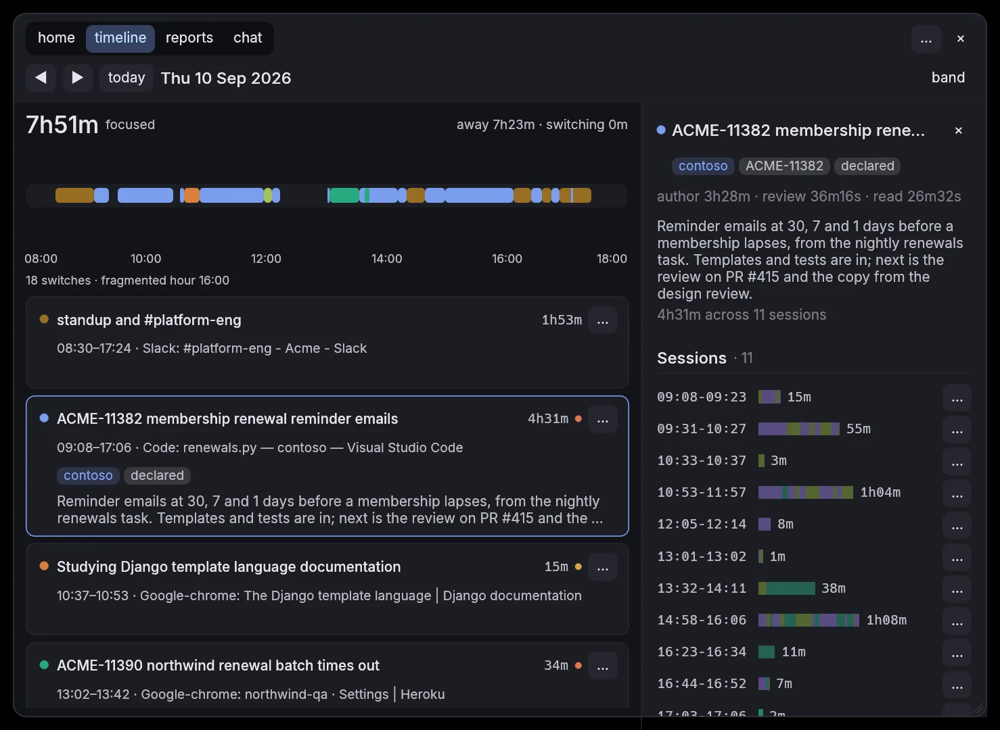
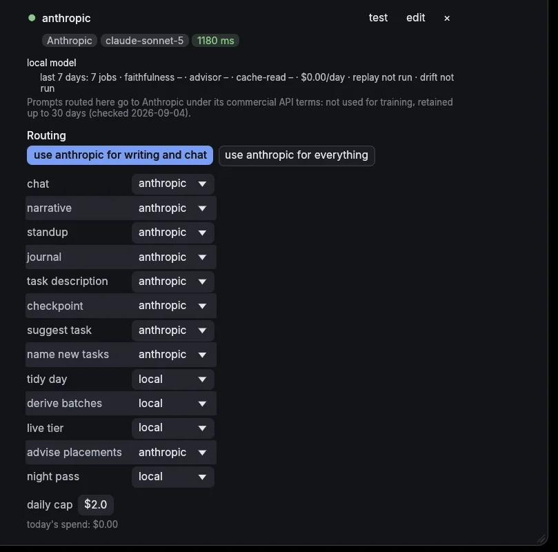

Your day,
written down.
A small window in the corner of your screen that knows what you worked on, for how long, and why. Everything stays on your own disk; a cloud model only if you bring the key.
- no account
- no server
- no telemetry
- no screenshots
- no keylogging
- no lock-in
last update pushed
— changes today · — this week


- research web framework for work9mto confirm placed by a rule · you filed this window before · Google-chrome: web frameworks 2026
- Google-chrome · Django vs FastAPI in 2026 — Hacker News20snew waiting for the model research web framework for work6mplaced by the model · Google-chrome: Django vs FastAPI in 2026 — Hacker News
- Google-chrome · web frameworks 2026 — Google Search12snew waiting for the model research web framework for work4mplaced by the model · Google-chrome: web frameworks 2026 — Google Search
- ACME-11382 renewal reminder emails
- ACME-11390 northwind batch
- design review
- the rest, named by the model
7h56m placed · 15m loose · 54m away · 29 blocks in 6 tasks · 2 corrections. Sam's Thursday, filed while it was still happening. Hover a block.
The day, as it happened.
On the left, what it saw: window titles with the time. On the right, what it wrote down: the day in lanes, one per task, any task open beside it. Drag the handle.

The week, added up.
Projects first: a stacked bar per day, the week's mix, every project with its share of the hours and the tasks under it. Then deep work, the longest block, switches, the hour that fragments, and how it compares with last week. Nothing to fill in.

How it works
One Thursday, first window to standup line. Same rows at every step.
-
Sees
Which window is in front, and when you step away. App name and title. No keystrokes, no screenshots, no clipboard.
Beside the window, the sources you switch on: the folder each shell command ran in, checkouts and commits to the second, the AI session in your terminal, browser history, the calendar you subscribe to, a microphone in use. Hands off the keyboard is quiet, not away, until the screen locks or ten minutes pass with nothing live.
events · one batch 09:08:16 focus Terminator sam@workstation: ~/dev/contoso place ~/dev/contoso · repo contoso 09:10:19 focus Code renewals.py — contoso 09:23:17 focus Chrome Django template language · docs.djangoproject.com 09:41:02 shell pytest tests/test_renewals.py · 41 s · ~/dev/contoso 10:27:08 focus Figma Renewal reminder email 10:46:00 quiet no input · Figma still in front 10:53:00 back away 7m 11:09:28 focus Chrome [ACME-11382] membership renewal… · Jira anchor item ACME-11382 11:52:10 git commit 4c1e9a2 on feat/ACME-11382 · contoso 12:14:00 lock away · batch closed · 9 spans -
Places
Project first: the repository a terminal is in, a ticket prefix, a domain, a title pattern you wrote. Then the task, from evidence: a ticket key in a tab or a branch, a window you filed before, the words a task has attracted. Every minute, deterministic, with a margin; a thin margin is marked to confirm.
What no task claims for long enough becomes a new one, and the local model's only job is to name it. Minutes it was not running are written down as not captured, never guessed.
project, then evidence, then a name project ~/dev/contoso · ACME-11382 · acme.atlassian.net → contoso northwind-qa · #northwind-alerts → northwind task 09:08–12:14 ACME-11382 membership renewal reminder emails holds ACME-11382 · declared in contoso · 1.00 13:02–13:41 ACME-11390 northwind renewal batch times out northwind-qa · #northwind-alerts · 0.82 14:11–14:58 new · Meet + Figma, 47m, nothing holds it named "Renewal emails design review" · local model · 38 s stored 3 segments · 1 to confirm · 0 provisional rows left -
Learns
It will be wrong sometimes. Rename a task, move a block, throw one out; the correction is kept, embedded, and read first next time a window like it comes up. Thrown out is a hard no.
Loose time folds into runs you file in one go. Once a day, slivers tidy into their neighbours. One undo.
organize · unassigned time 
-
Writes
Standup, timeline, task cards, reports by project, chat. One table, nothing worked out twice, nothing stored anywhere else.
same rows, four ways standup Yesterday: renewal reminder emails (ACME-11382, 5h12m), the northwind batch fix on QA (ACME-11390, 39m), design review (47m) · PR #415 is up timeline 09:08 ──────────────── 12:14 ACME-11382 report contoso · ACME-11382 · 5.2 h · 61 % chat "what did I do before the design review?" → same rows -
Shows its work
Once a day it scores itself: how much of the active day it covered, how many placements you threw out, how many verdicts it got wrong, and how often it was confident and wrong. The numbers sit in Settings and print from
chronicle status, per model, so a prompt change that costs accuracy is seen the next morning.Every placement keeps its reason. Two buttons: the digest the model read, the answer it gave.
chronicle status · self-score $ chronicle status self-score, 7 days to 2026-09-11 (computed 2026-09-11 12:09): coverage 98% of 36h13m active tasks minted 7, merged within a day 0 (0%) ejects 0 of 116 placements (0%), renames 3 verdicts 90 closed, 0 wrong (0%); confident-wrong 0 of 13 (0%) cross-project placements 0; unfiled 8h06m of 36h13m active (22%) per backend, same days: local: 6 jobs · faithfulness – · advisor – · $0.00/day -
Your own key, if you want
Local until you paste an API key. Then pick what goes out: writing and chat, or everything. The key sits in one file only you can read, and the day's spend has a cap.
Storage & server keeps one line saying what left the machine today. With no key it ends in “nothing else”.
settings › model 
What it can read.
The window title is the floor. Everything else is a source you switch on, each one a row in Settings with its state, what it produced this week, and what it would take to connect. Nothing is read that is not listed there.
On this machine
Git repositories and their hooks, the folder each shell command ran in, listening ports and Compose stacks, link files beside a project, browser history, a microphone in use.
Your tools
AI sessions in eight formats, Claude Code and Codex among them, editor heartbeats, pull requests through gh, a calendar by ICS or Google.
Elsewhere, read-only
MCP servers, local or remote: a Jira or Linear the derivation can ask about a ticket key. Allowlisted calls, nothing written back without a confirm.
Each source is a row in Settings › Connections with its state on this machine, what it produced this week, and what it would take to connect. The full list, with what each one needs on Linux, macOS and Windows, is on the tools page, written from the same registry the app reads.
Set a task.
Go and do it.
Install it, open it, type a task in. Then start working. The first window you open shows up in the feed within seconds, picked up and tracking, with the reason beside it.
Nothing to start, nothing to stop, nothing to tag.

Get it.
One binary, no runtime, no account. The language model downloads on first use, once, and never leaves the machine.
Linux x86-64
curl --proto '=https' --tlsv1.2 -LsSf https://github.com/james-clarke/chronicle/releases/latest/download/chronicle-installer.sh | sh
Puts the binary in ~/.local/bin. Prefer to place it yourself? Take the tarball. Then chronicle service install starts it with your session. X11 and Wayland both, on wlroots compositors and KDE.
macOS Apple silicon and Intel
brew install james-clarke/tap/chronicle
Ported and compiled for both, never yet run on a Mac, and not signed by Apple, so this is the developer route until both change. Chronicle reads the focused window’s title through Accessibility and asks for that permission once, on the first run.
Windows
Not yet. The capture layer is being written now, and this line changes when it ships.
Every build, with its checksum, is on the releases page.
Open source, built in the open.
AGPL-3.0, one repository, no contributor agreement. The code is written by Claude, working in that repository under direction and review, and the evidence for that is the record rather than the claim: every milestone starts as a plan written before the code, with a gate per chunk and a list of what was knowingly left undone, and none of them are tidied afterwards. Start with the index.